Which statement best defines tailoring?
Tailoring, Models, Methods, and Artifacts
Two parts. Tailoring is the deliberate adaptation of the project-management approach, governance and processes to the environment and the work: what can be tailored (life cycle, processes, engagement, tools, methods and artifacts), why (commitment, customer focus, efficient resources), and the four-step process (select an initial approach, tailor for the organization, tailor for the project, keep improving). The second part is the PMBOK toolbox: models (ways of thinking, such as situational leadership, Herzberg, ADKAR, Cynefin, Tuckman), methods (ways of doing, such as estimating and meetings) and artifacts (things produced, such as the business case, registers and plans).
Tailoring
Deliberate, continuous adaptation; more critical projects need more rigor. Steps: select → organization → project → improve.
What you tailor
Life cycle and approach, processes (add, modify, remove, blend, align), engagement, tools, methods and artifacts.
Model, method, artifact
Model = a way of thinking; method = a way of doing; artifact = a template, document or deliverable.
Models to know
Situational Leadership II, Herzberg’s hygiene and motivators, Maslow, Theory X/Y/Z, ADKAR, Kotter’s 8 steps, Cynefin, Stacey, Tuckman, salience.
How the lecture is organized
- Slides 1–12Tailoring: definition, competing demands, why and what to tailor
- Slides 13–22The tailoring process: organization and project factors, ongoing improvement
- Slides 23–27Models, methods and artifacts: definitions and costs
- Slides 28–34Commonly used models
- Slides 35–41Commonly used methods and artifacts
Exam focus
The instructor said to understand these models rather than memorize them; expect scenarios such as “which model helps here?” or “is this a hygiene factor or a motivator?”. Tuckman (Midterm 251 MCQ 7) is tested in Chapter 3, and Final 251 asked for a PM tool or technique for a complex software project.
How to read this page
Every original slide is shown unchanged. Yellow marks on a slide point to a numbered note: hover or tap a mark to jump to its note, and hover a note to see its marks. Questions tagged Past exam appeared on a real paper; Prediction questions are likely angles, not confirmed. Pick an answer to each question: a wrong pick tells you why it is wrong, so you can try again.
All 41 slides
- 1 Slide 1
- 2 Outline
- 3 Tailoring (section)
- 4 Tailoring
- 5 Tailoring
- 6 Why Tailor?
- 7 What to Tailor?
- 8 What to Tailor?
- 9 What to Tailor?
- 10 What to Tailor?
- 11 What to Tailor?
- 12 What to Tailor?
- 13 The Tailoring Process
- 14 Selecting the Initial Development
- 15 Assessing the Organizational and Project
- 16 Tailoring for the Project
- 17 Tailoring for the Project
- 18 Tailoring for the Project
- 19 Tailoring for the Project
- 20 Implement Ongoing Improvement
- 21 Situations and Tailoring Suggestions
- 22 Summary
- 23 Models, Methods, and Artifacts (section)
- 24 Models, Methods, and Artifacts
- 25 Models, Methods, and Artifacts
- 26 Principles, domains and the toolbox together
- 27 Models, Methods, and Artifacts
- 28 Commonly Used Models
- 29 Commonly Used Models
- 30 Commonly Used Models
- 31 Commonly Used Models
- 32 Commonly Used Models
- 33 Commonly Used Models
- 34 Models by performance domain
- 35 Commonly Used Methods
- 36 Methods by performance domain
- 37 Methods by performance domain (cont.)
- 38 Commonly Used Artifacts
- 39 Artifacts by performance domain
- 40 Artifacts by performance domain (cont.)
- 41 Artifacts by performance domain (cont.)
Slide 1
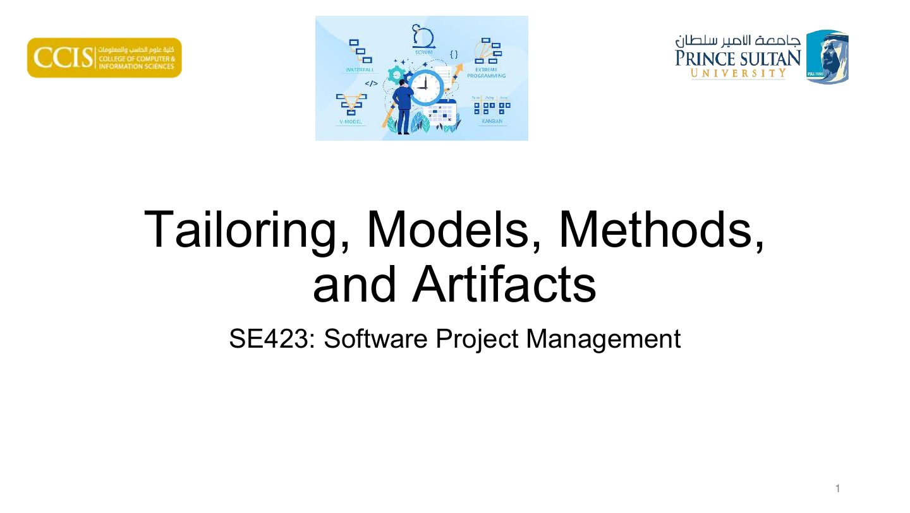
Notes
Tailoring means fitting the project-management approach to the project. Models, methods and artifacts are the toolbox it picks from.
This finishes Chapter 1: principles (how to behave) and performance domains (what to manage) are applied through a tailored selection of tools.
Outline
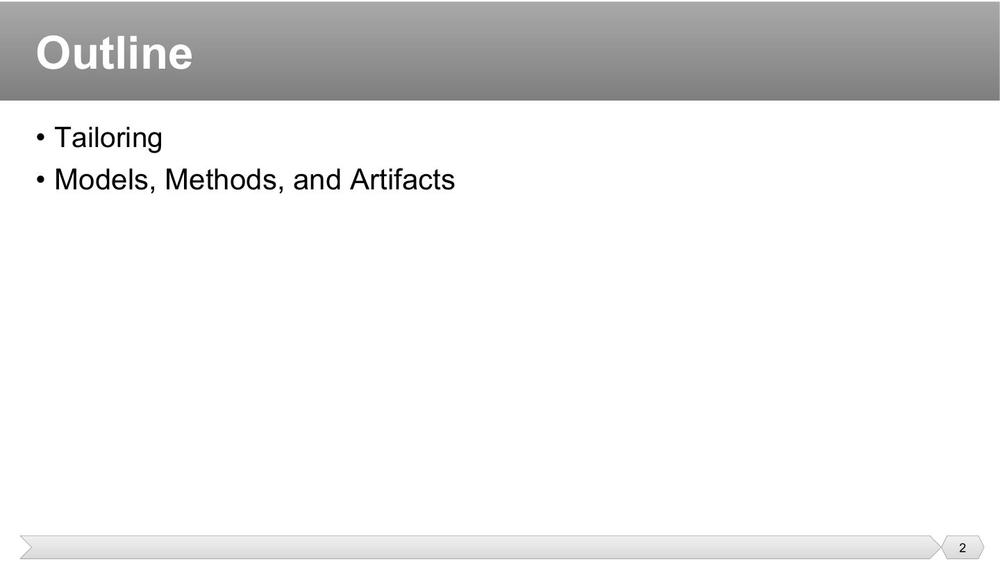
Notes
The first half answers “how do we adjust our way of working to fit this project?”.
The second half is the toolbox you choose from once you’ve decided what fits.
Tailoring (section)
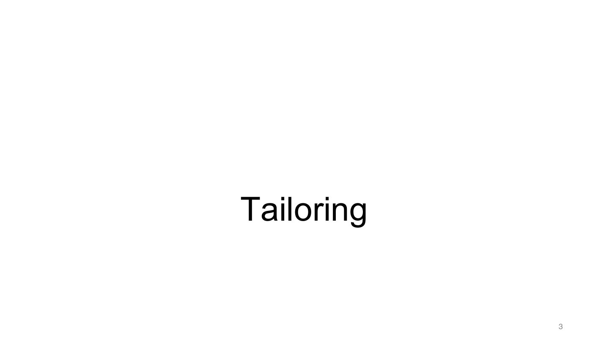
Notes
Section divider: tailoring.
Tailoring
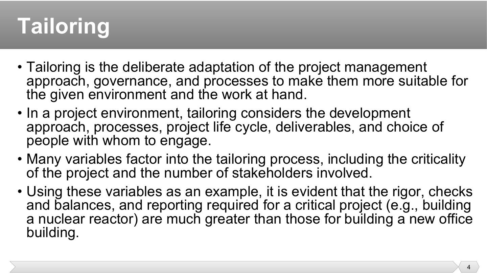
Notes
Tailoring is a decision made for a reason. Skipping steps because you’re in a hurry isn’t tailoring, while dropping a step because you can show this project doesn’t need it is. Deliberate is what separates the two.
Nearly everything about how a project runs can be adjusted. So when a question asks whether something can be tailored, the answer is usually yes, including the development approach and even who gets involved.
The higher the cost of a mistake, the more control you need. And with more people involved, there’s more to coordinate. So criticality and the number of stakeholders push you toward more formality.
If a reactor fails, people can die, so every step is checked and recorded. An office building still needs care but not that level of rigor. Exam trap: more critical means more process, never less.
Exam angle
Tailoring
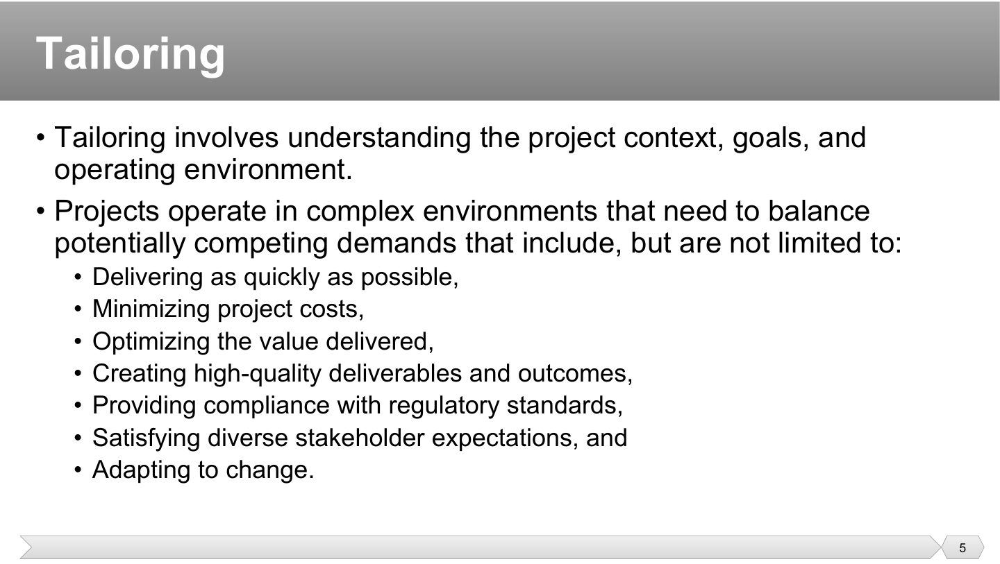
Notes
You can’t fit an approach to a project you don’t understand. A student app and a banking system need different things, and only their context and goals reveal what.
Projects must balance competing demands: speed, low cost, value, quality, regulatory compliance, diverse stakeholder expectations, and adapting to change. No project can maximize all seven at once (the fastest delivery is rarely the cheapest or the most thoroughly checked), which is why the approach has to be tailored to what matters most here.
Tips & tricks
- COMPADreS: Creating high-quality deliverables, Optimizing value, Minimizing costs, Providing compliance, Adapting to change, Delivering quickly, Satisfying stakeholders.
Why Tailor?
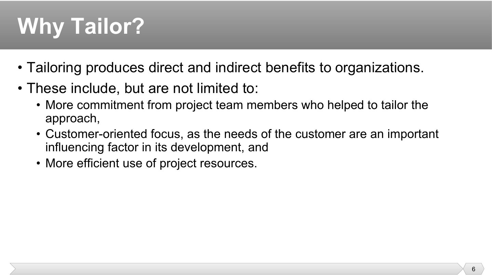
Notes
Direct benefits show up on this project, while indirect ones build up over time, such as a team that gets better at choosing how to work. The next three items say what they are.
People follow rules they helped write more willingly than rules handed to them. So letting the team shape the approach is a way of earning commitment, not just a courtesy.
A standard process is built around the process. Tailoring asks “what does this customer need from us?”, which keeps a customer-oriented focus on things they actually value.
More efficient use of resources: effort goes where the project needs it, not into unneeded process.
Exam angle
Which is a stated benefit of tailoring?
What to Tailor?
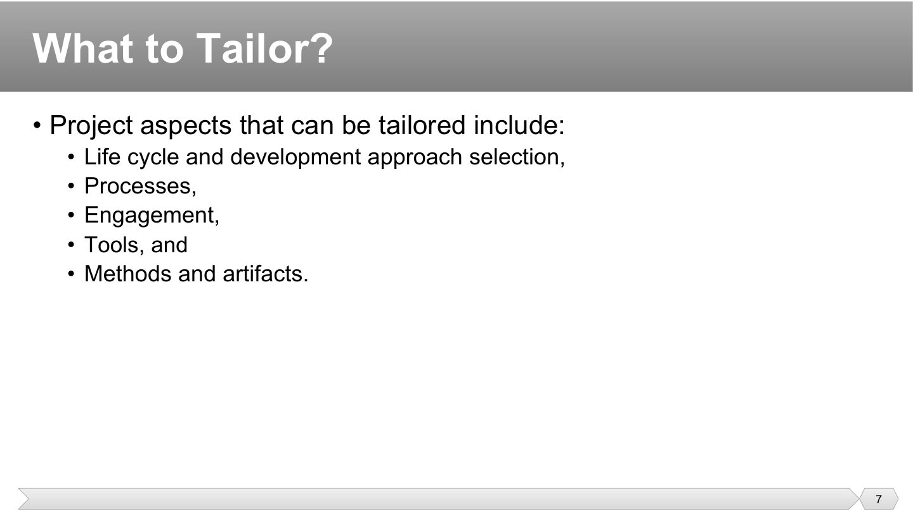
Notes
This is the biggest decision, the overall way the work is organized. Slide 8 explains the life cycle and development approach.
Slide 9 covers processes: the specific steps inside the approach, and which to keep.
Slide 10 covers engagement: who’s involved and how much they can decide.
Slide 11 covers tools: what software or equipment the team uses.
Slide 12 covers methods and artifacts: techniques and documents, scaled to fit. Remember all five with TEMPLe.
Tips & tricks
- TEMPLe: Tools, Engagement, Methods and artifacts, Processes, Life cycle and development approach.
What to Tailor?
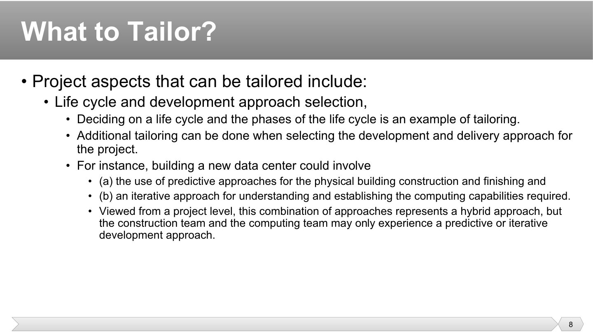
Notes
You aren’t stuck with a standard set of phases. A research-heavy project might add a feasibility phase, for example, so picking the phases is itself tailoring.
The life cycle is the shape of the project, while the delivery approach is how the results reach people. Each is a separate choice you can adjust.
Why two approaches in one building? The walls can be fully specified up front, but the computing needs are still being discovered. Each part gets the approach that suits what’s known about it.
Whether something is hybrid depends on where you’re standing. No single team feels hybrid, since each follows its own approach, but the project as a whole mixes them.
Exam angle
A new data center is built in fixed construction phases, while its computing capabilities are worked out in iterations. What is the overall approach?
What to Tailor?
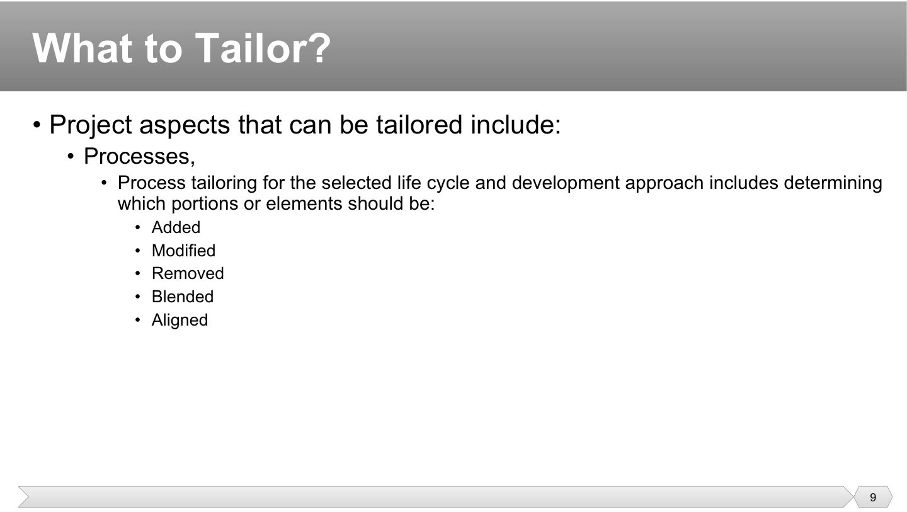
Notes
Choosing an approach doesn’t mean accepting all of its steps. Process tailoring goes through them and asks about each one, using the five verbs below.
Added (extra rigor, e.g. a security review), modified (changed to fit, e.g. a lighter weekly report), removed (dropped as unnecessary), blended (elements from different methods combined into one, e.g. Scrum ceremonies with a predictive budget process) or aligned (harmonized so definitions and terms are consistent across teams).
Tips & tricks
- A RuMBA: Aligned, Removed, Modified, Blended, Added.
Exam angle
Combining elements of two different methods into one process is which process-tailoring action?
What to Tailor?
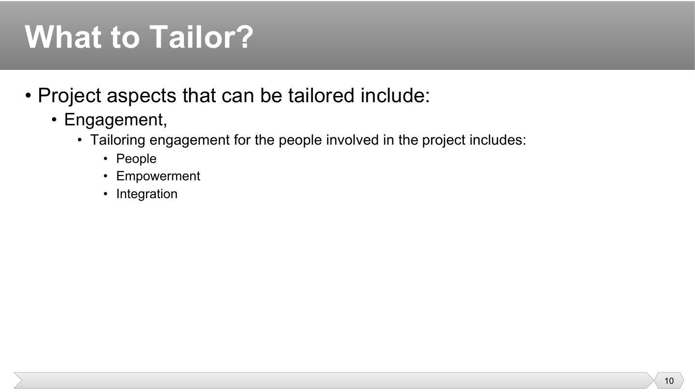
Notes
A process only works if the right people are involved at the right level. Engagement tailoring settles that, and the next note gives the three things to decide.
People: who is on the team and with which skills and capabilities. Empowerment: how much responsibility and local decision-making the team gets (a mature team gets more). Integration: how contractors, partners and other organizations are brought into the team.
Tips & tricks
- PIE: People, Integration, Empowerment.
What to Tailor?
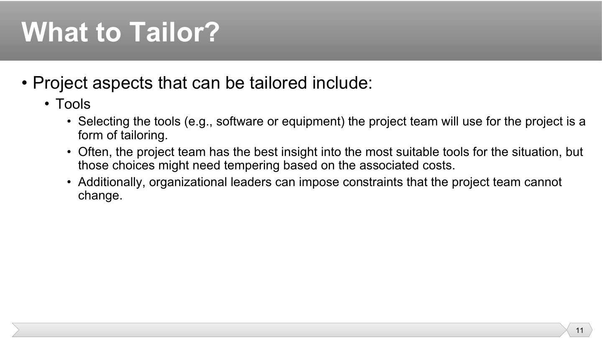
Notes
Tools shape how people work, so the choice matters. A distributed team may need a shared board where a small co-located one needs only a whiteboard, which is why picking tools counts as tailoring.
The people using a tool every day know what actually helps, so ask them. But the “best” tool may cost too much, so someone has to weigh the benefit against the cost.
A company may require one tool for security or licensing reasons, even if the team prefers another. Tailoring happens within such constraints, so the team works around them instead of ignoring them.
What to Tailor?
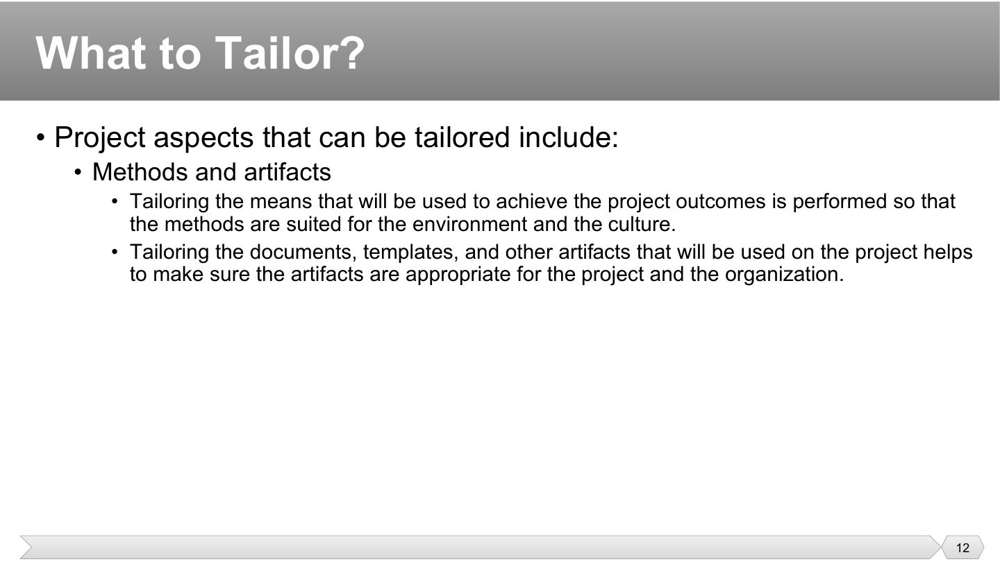
Notes
A method that works in one place can fail in another. Open retrospectives suit a culture where people speak freely, but may need adjusting where criticizing others is uncomfortable. Hence fitting to environment and culture.
Artifacts (documents, templates) are tailored so they are appropriate for the project and organization: a two-page charter for a small internal project, a full one for a regulated contract.
The Tailoring Process
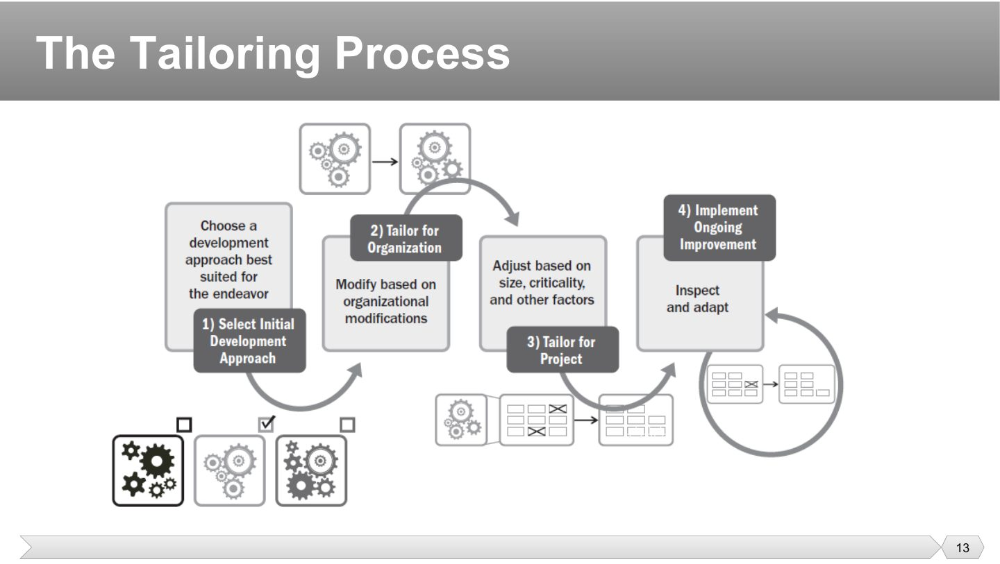
Notes
The tailoring process, step 1: select the initial development approach: choose the approach best suited to the endeavor (the ticked set of gears).
Step 2: tailor for the organization: modify it to fit organizational requirements and constraints.
Step 3: tailor for the project: adjust for size, criticality and other project factors.
Step 4: implement ongoing improvement: inspect and adapt; the loop arrow shows it never ends.
Exam angle
Put the four steps of the tailoring process in order.
Compare with the model answer
(1) Select the initial development approach; (2) tailor the approach for the organization; (3) tailor it for the project; (4) implement ongoing improvement (inspect and adapt throughout the project).
Selecting the Initial Development
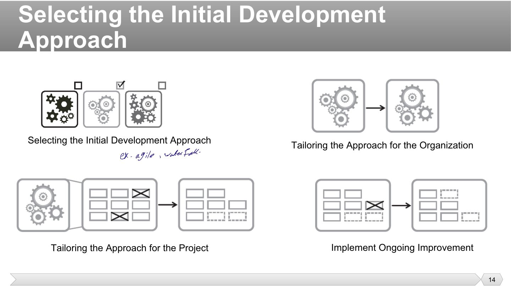
Notes
Step 1 in pictures: choose the base approach, e.g. agile or waterfall (the handwritten note).
Step 2: one set of gears becomes the organization’s adapted version.
Step 3: elements are removed (the crossed boxes) and adjusted for this project.
Step 4: the remaining process keeps being refined.
Assessing the Organizational and Project
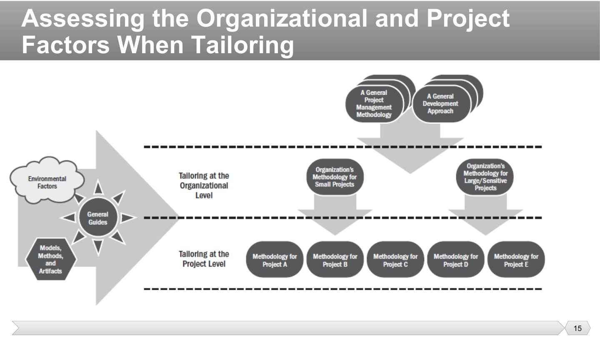
Notes
Tailoring happens at two levels. At the organizational level, a general PM methodology and development approach are adapted into the organization’s own methodologies, e.g. one for small projects and one for large or sensitive projects.
At the project level, each project tailors further (methodologies for projects A–E differ).
Both levels are guided by environmental factors, general guides, and the available models, methods and artifacts.
Tailoring for the Project
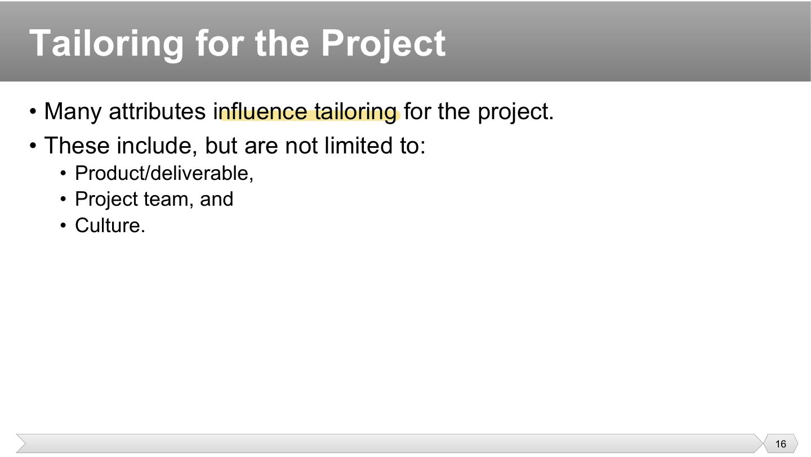
Notes
Knowing the project’s features tells you how far to adjust. Rather than a long list, the slide groups them into three questions: what are we making, who’s making it, and in what kind of workplace?
Each one has its own slide next. Remember them as what (product/deliverable), who (project team) and where (culture).
Tips & tricks
- CoPPer: Culture, Project team, Product or deliverable.
Tailoring for the Project
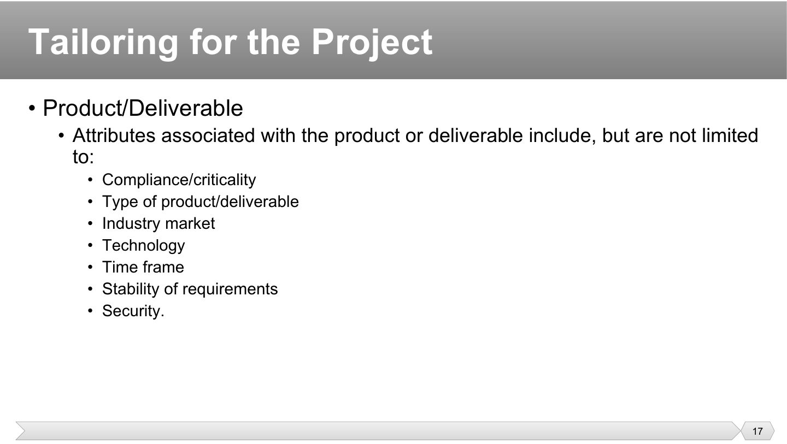
Notes
The thing you’re producing limits your choices. A heart monitor and a game can’t follow the same process, even with the same team, which is why product/deliverable comes first.
Compliance and criticality decide how much proof and checking you need. A medical product needs a paper trail, so a short time frame or new technology can’t remove that need; it only makes planning harder.
Stability of requirements (stable favours predictive, volatile favours adaptive) and security needs.
Tips & tricks
- Sentence, in slide order: Cats Take In Too Tiny Snacks, Sadly. Compliance, Type of product, Industry market, Technology, Time frame, Stability of requirements, Security.
Tailoring for the Project
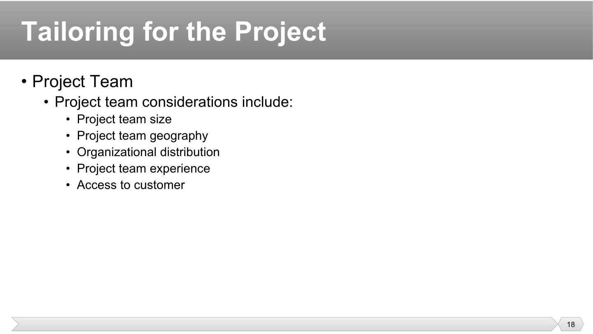
Notes
The same process can work for one team and fail for another. So look at who’s doing the work before deciding how much structure they need. These are the project team factors.
Five people in a room can just talk. Fifty people across time zones need written decisions and scheduled meetings, so size and geography raise the amount of formal communication needed.
Team experience (an experienced team needs less prescribed process) and access to the customer (adaptive approaches need frequent customer input).
Tips & tricks
- SAGE Owl: Size of the team, Access to customer, Geography, Experience, Organizational distribution.
Tailoring for the Project
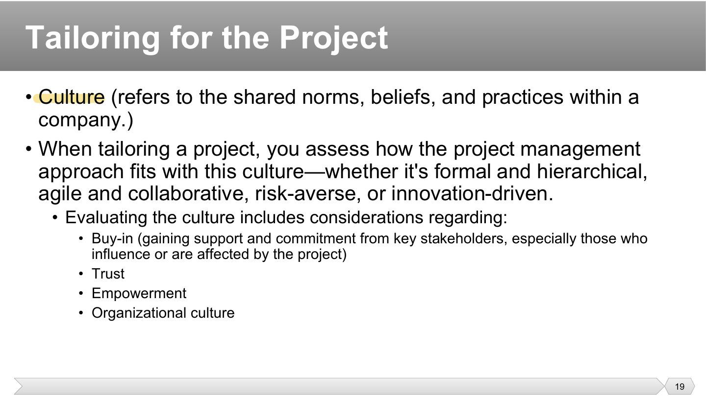
Notes
Culture is how things really get done, which may differ from official policy. If everyone knows that bad news gets punished, that’s culture, even if no document says so.
A process only works if the workplace accepts it. Daily self-organizing meetings can fall flat where people wait for orders, so check the fit first: is it formal and hierarchical, or agile and collaborative? An agile process forced onto a strictly hierarchical culture struggles.
These tell you how much change people will accept. Without buy-in, people quietly ignore the new way of working. Without trust and empowerment, they won’t make decisions on their own.
Tips & tricks
- TO BE: Trust, Organizational culture, Buy-in, Empowerment.
Implement Ongoing Improvement
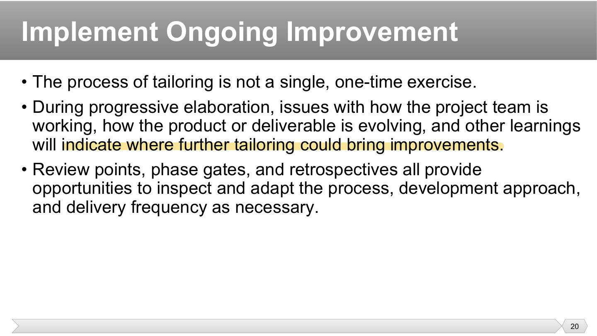
Notes
The first version is a best guess about what will work, and you’ll know more later. So treat tailoring as not a one-time exercise, or you’ll keep following a process that stopped fitting.
Progressive elaboration means details get clearer as you go. As they do, so do the problems: if reviews keep catching the same errors, you’ve found where the process needs adjusting.
You don’t need extra meetings to improve. Retrospectives and phase gates are already scheduled pauses, so use them to ask “is the way we work still right?”.
Exam angle
True or false: tailoring is done once, when the project is initiated.
- It continues throughout the project; reviews, phase gates and retrospectives are chances to adapt.
Situations and Tailoring Suggestions
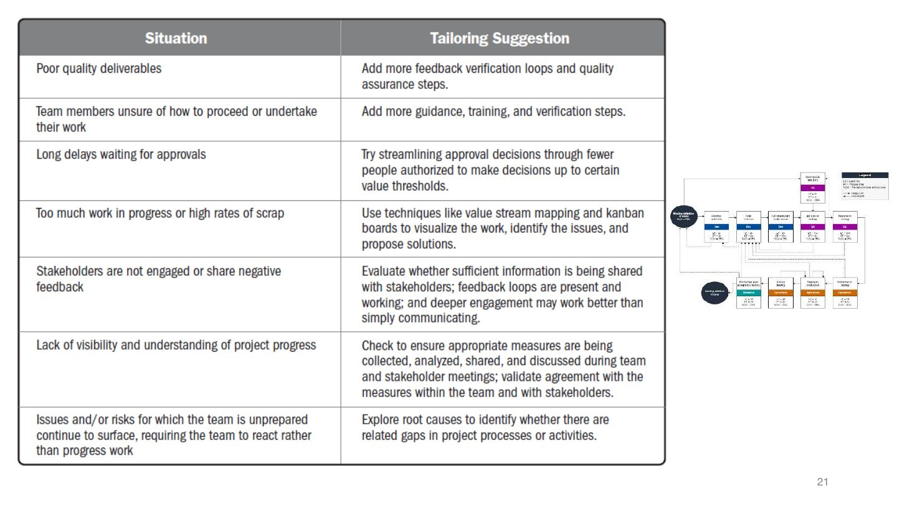
Notes
The pattern in this table: name the problem, then tailor in the missing control. Poor quality deliverables → add feedback, verification loops and quality-assurance steps. Members unsure how to proceed → add guidance, training and verification.
Long approval delays → streamline decisions: fewer people authorized to decide, up to value thresholds.
Too much work in progress or scrap → value-stream mapping and kanban boards to visualize the work and find the problems. Disengaged stakeholders → check information sharing and feedback loops; deeper engagement may work better than simply communicating.
Lack of visibility of progress → make sure the right measures are collected, analysed and discussed, and validated with the team and stakeholders. Recurring surprises → root-cause analysis of gaps in the process.
Exam angle
A team keeps waiting several days for approvals before it can proceed. What tailoring change does the table suggest?
Compare with the model answer
Streamline approval decisions: authorize fewer people to make decisions, up to certain value thresholds, so routine approvals don’t queue.
Summary
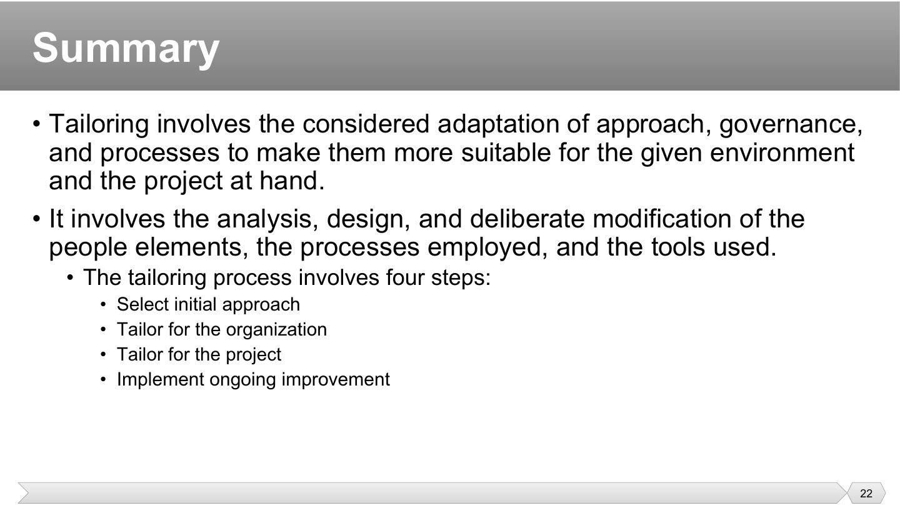
Notes
Considered is the same point as “deliberate” on slide 4: you adapt for a reason you can state. That’s the idea to carry into a written answer.
This tells you what can be changed, so a good answer names all three: people, processes and tools. Changing only the paperwork isn’t enough if the team and tools stay wrong.
The order runs from general to specific and then keeps going. Remember “Smart Teams Tailor Iteratively”: select a base, fit it to the organization, fit it to the project, then keep improving.
Tips & tricks
- The order matters here: Smart Teams Tailor Iteratively. Select the initial approach, Tailor for the organization, Tailor for the project, Implement ongoing improvement.
Models, Methods, and Artifacts (section)
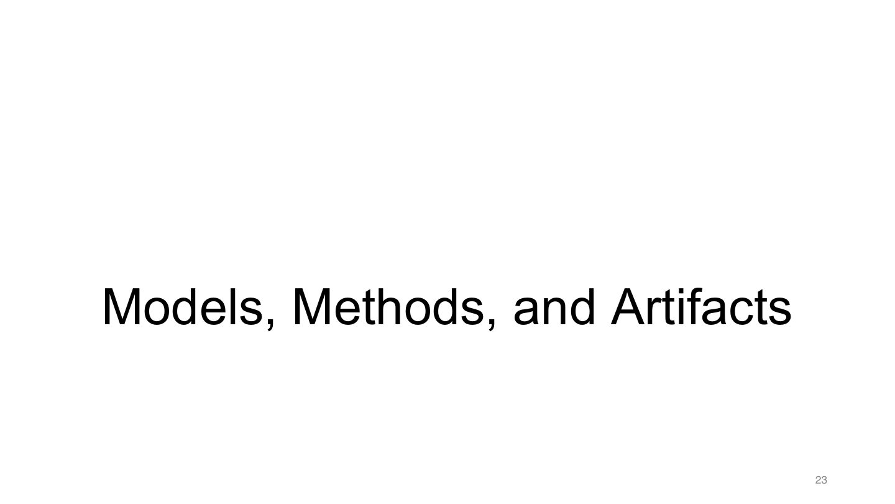
Notes
Section divider: models, methods and artifacts.
Models, Methods, and Artifacts
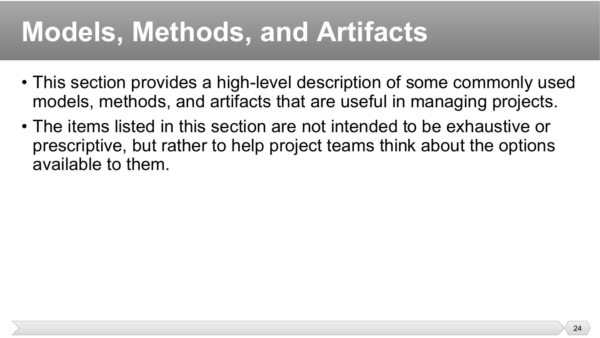
Notes
You only need to know what each one is for, not how to run each in detail. A high-level view helps you recognize which tool fits a situation.
It is not exhaustive or prescriptive: a menu of options to tailor from, not a checklist to use every time.
Models, Methods, and Artifacts
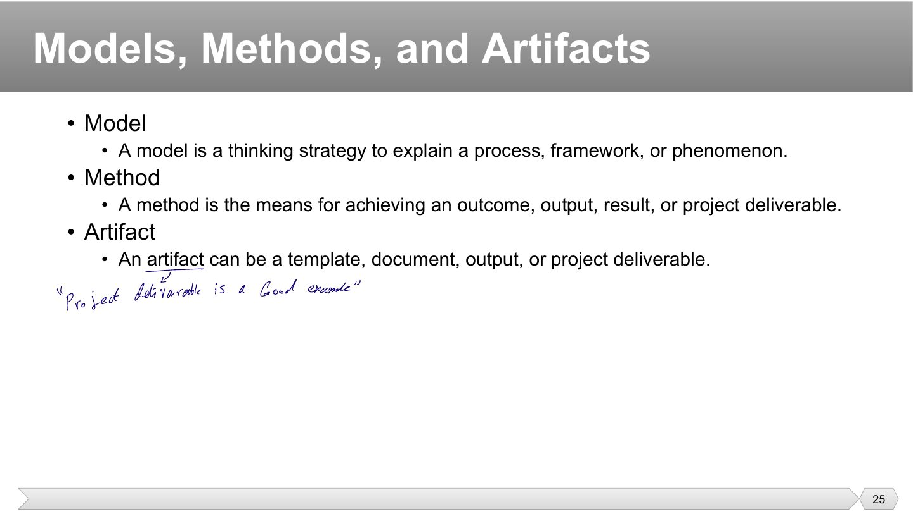
Notes
A model helps you make sense of what you see. It doesn’t tell you what to do step by step: Tuckman explains why a new team is arguing, so thinking is its job.
A method is something you carry out, like running a retrospective. If you could schedule it and do it, it’s a means for achieving something.
An artifact is something you can hold or file, like a risk register. Model = think, method = do, artifact = thing answers most “which one is this?” questions.
Tips & tricks
- MaMA: Model, Method, Artifact.
Exam angle
A risk register is best classified as a:
Give an example of a project management tool or technique that you might use to manage a complex software development project, and explain how it could help you ensure project success.
Compare with the model answer
A Work Breakdown Structure: it decomposes the complex system into smaller deliverables and work packages that can be estimated, assigned and tracked. Nothing is forgotten, ownership is clear, and the WBS is the base for the schedule, budget and risk analysis, so problems show up early and progress is measurable. (Other valid answers: Gantt chart, CPM, risk register, Scrum board with a burndown chart, each with its benefit explained.)
Principles, domains and the toolbox together
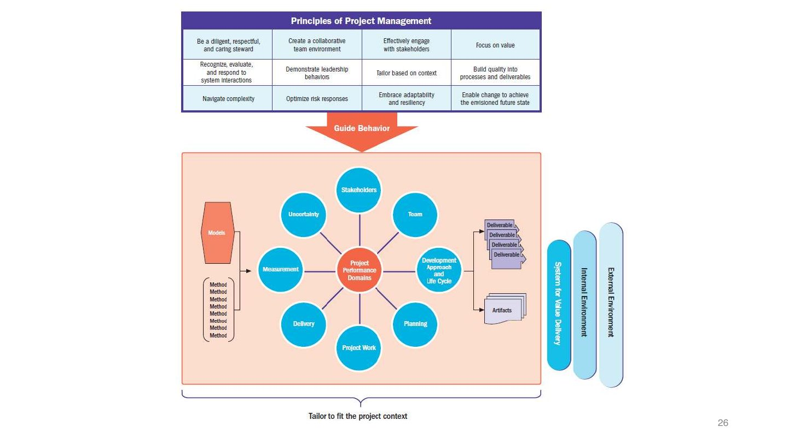
Notes
The whole PMBOK 7 picture in one diagram. At the top, the 12 principles…
…guide behavior in…
…the 8 performance domains (the circle), which are carried out with models, methods and artifacts (left and right) to produce deliverables. Everything sits inside the system for value delivery and the internal and external environments, and is tailored to fit the project context (bottom).
Models, Methods, and Artifacts
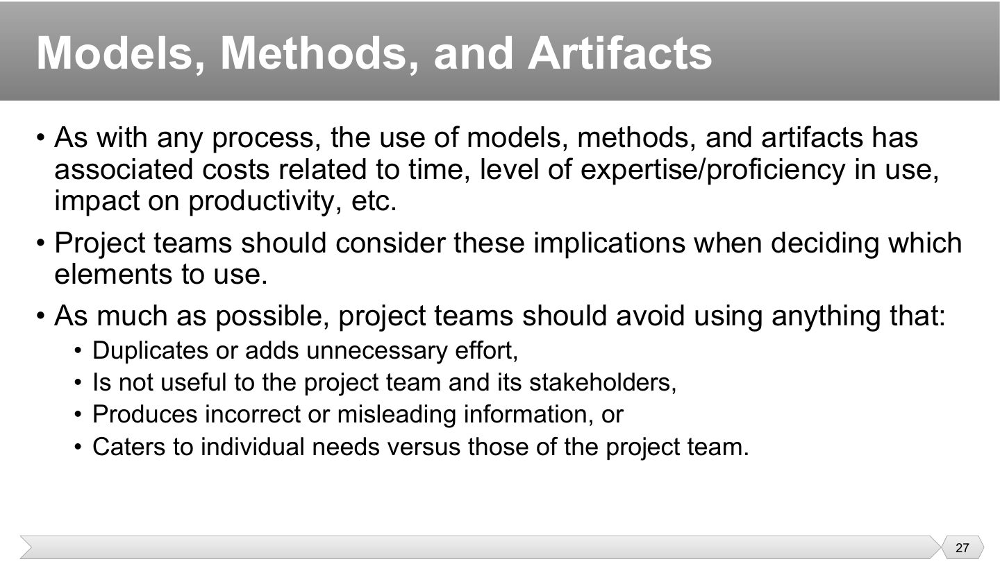
Notes
No tool is free. Even a simple template takes time to fill in and learn. So “this tool is useful” isn’t enough: the benefit has to beat its costs.
Teams should weigh these before adopting one.
Avoid anything that duplicates work or adds unnecessary effort, isn’t useful to the team and stakeholders, produces incorrect or misleading information, or serves one individual’s needs rather than the team’s (a report one manager likes but nobody reads).
Commonly Used Models
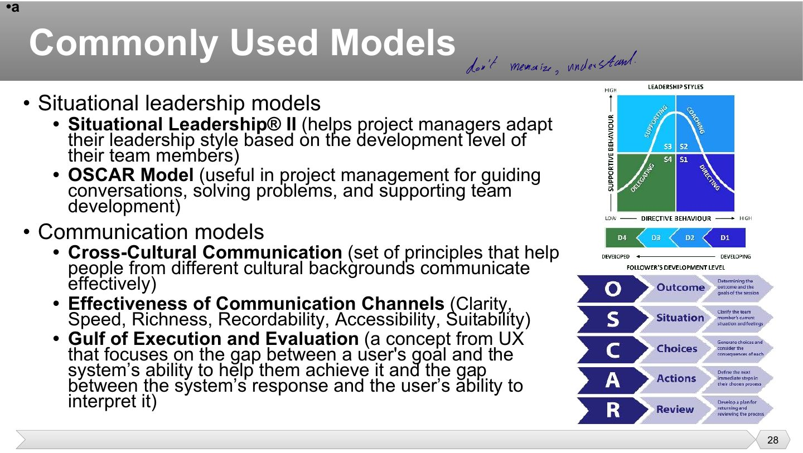
Notes
Situational Leadership II: the PM adapts style to each member’s development level (competence and commitment): directing a beginner, coaching, supporting, then delegating to an expert. The instructor’s note: understand these models, don’t memorize them.
Coaching works by asking, not telling. OSCAR walks through the goal, where things stand now, what the options are, what to do next, and how it went, so the person solves their own problem.
Not every message suits every channel. A sensitive problem needs a conversation, while a date change suits an email you can refer back to. Channels differ in clarity, speed and recordability, so pick the one the message needs.
Execution asks “how do I do what I want here?” and evaluation asks “did it work?”. When users can’t answer them, you have a gulf. It’s from UX, but it fits any process people find confusing.
Exam angle
Which model helps a project manager adapt leadership style to each team member’s development level?
Commonly Used Models
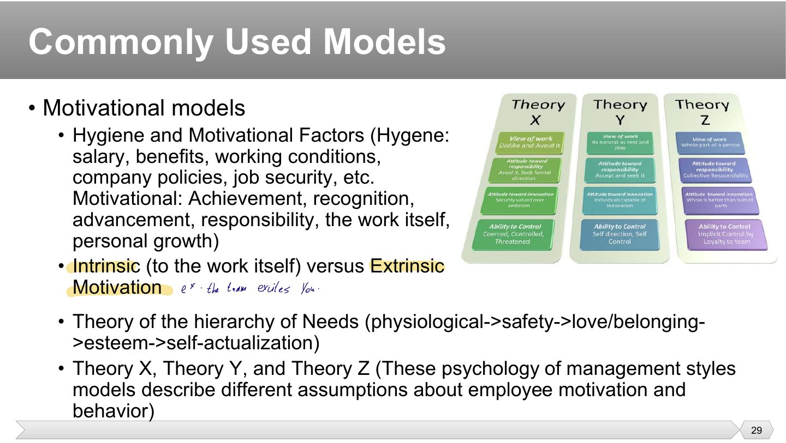
Notes
Good pay stops people being unhappy but doesn’t make them excited. That’s the key insight: fixing hygiene only gets you to neutral, while motivators like recognition produce real effort. A pay rise is hygiene, not a motivator.
Intrinsic motivation comes from the work itself (it excites you); extrinsic from outside rewards (pay, grades).
People can’t care about growth while worried about their job or safety. So if a teammate is struggling with a basic need, inspiring talk won’t help until that’s dealt with. That’s Maslow’s order: lower needs first.
Theory X: people dislike work and must be controlled. Theory Y: people want to work and should be empowered. Theory Z: long-term employment, loyalty and involvement.
Exam angle
In Herzberg’s model, which of these is a motivator rather than a hygiene factor?
A manager assumes employees dislike work and must be closely supervised. Which theory does this reflect?
Commonly Used Models
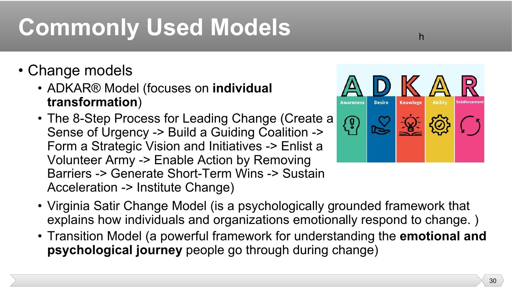
Notes
ADKAR explains why one person isn’t changing, by finding the step they’re stuck on. Someone who knows how but doesn’t want to needs Desire, not more training.
People resist unless they feel a reason to change, so urgency comes first. Kotter is about moving a whole organization, and the order matters: visible short-term wins come before making the change permanent.
Performance usually gets worse before it gets better. If you know that’s normal under the Satir model, you won’t panic and abandon a change during the dip.
Bridges points out that people must let go of the old way before accepting the new one. Announcing a change isn’t the same as people having moved through the transition.
Exam angle
Which change model focuses on the individual, through awareness, desire, knowledge, ability and reinforcement?
Commonly Used Models
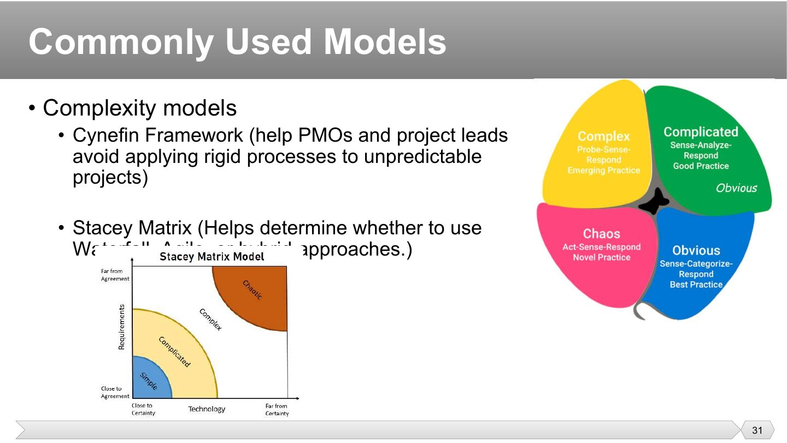
Notes
Cynefin sorts situations into obvious (apply best practice), complicated (analyse with experts), complex (probe and experiment) and chaotic (act first). It stops teams applying rigid processes to unpredictable projects.
Ask two questions: how sure are we about what’s needed, and about how to build it? Sure about both suggests waterfall, and unsure about both suggests agile. That’s all the Stacey matrix is doing.
Exam angle
Which model helps decide between waterfall, agile and hybrid approaches based on how uncertain the requirements and technology are?
Commonly Used Models
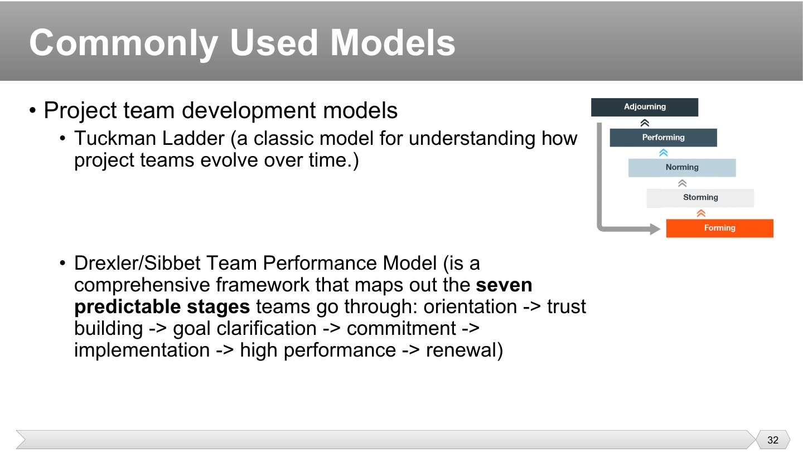
Notes
Tuckman ladder: forming → storming → norming → performing → adjourning. Chapter 3 covers each stage, and the midterm asked which stage has members competing for leadership (storming).
Compare it with Tuckman: both describe stages, but Drexler/Sibbet starts with “why am I here?” and “who are you?”, and ends with renewal, because a team has to keep re-committing. Its seven stages suit a long-running team.
Exam angle
According to Tuckman’s model of team development, which stage is characterized by members competing for leadership and struggling with group processes?
- Storming is when members compete for leadership and test group processes; norming comes after, when agreement is reached. (Also Midterm 251 V2 MCQ 7.)
Commonly Used Models
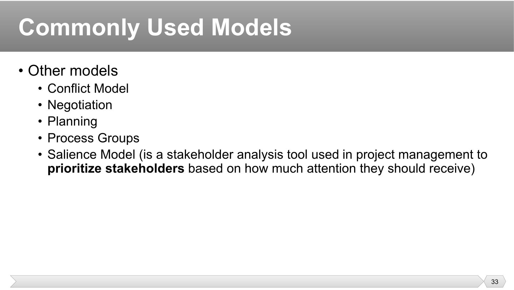
Notes
Other models: conflict (styles of handling conflict, Chapter 3), negotiation, planning, and process groups (initiating, planning, executing, monitoring and controlling, closing).
The salience model prioritizes stakeholders by power, legitimacy and urgency to decide how much attention each needs (Chapter 8).
Exam angle
How can project managers identify and prioritize stakeholders, and what strategies can they use to communicate effectively with each stakeholder group?
Compare with the model answer
Identify stakeholders by brainstorming with the team, reading the charter and contracts, and interviewing key people, then record them in a stakeholder register. Prioritize them with a power/interest grid (or the salience model: power, legitimacy, urgency). Then tailor communication: high power and high interest → manage closely with interactive meetings; high power, low interest → keep satisfied with concise push reports; low power, high interest → keep informed with push updates or pull (portal); low/low → monitor. Chapter 8 develops stakeholder management.
Models by performance domain
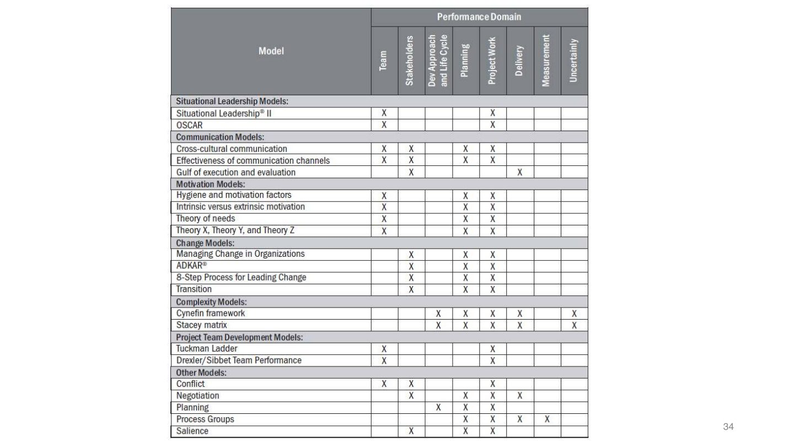
Notes
A reference table showing which performance domains each item is useful in (an X per domain). Don’t memorize it; use it to pick a suitable tool when a scenario asks which method or artifact would help. Models: e.g. situational leadership and OSCAR help the team and project-work domains; the Stacey matrix helps choose the development approach and handle uncertainty.
Commonly Used Methods
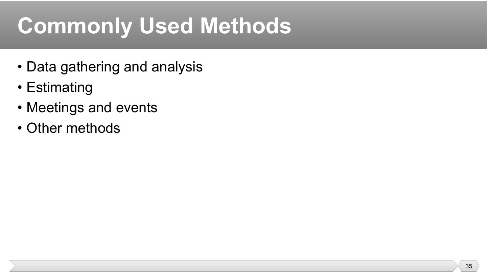
Notes
Method families: data gathering and analysis (alternatives analysis, root-cause analysis, cost of quality, earned value, SWOT…).
Estimating (affinity grouping, function points, story points, Delphi…).
Meetings and events (kickoff, stand-up, retrospective, review, steering committee…), and other methods.
Tips & tricks
- DEMO: Data gathering and analysis, Estimating, Meetings and events, Other methods.
Methods by performance domain
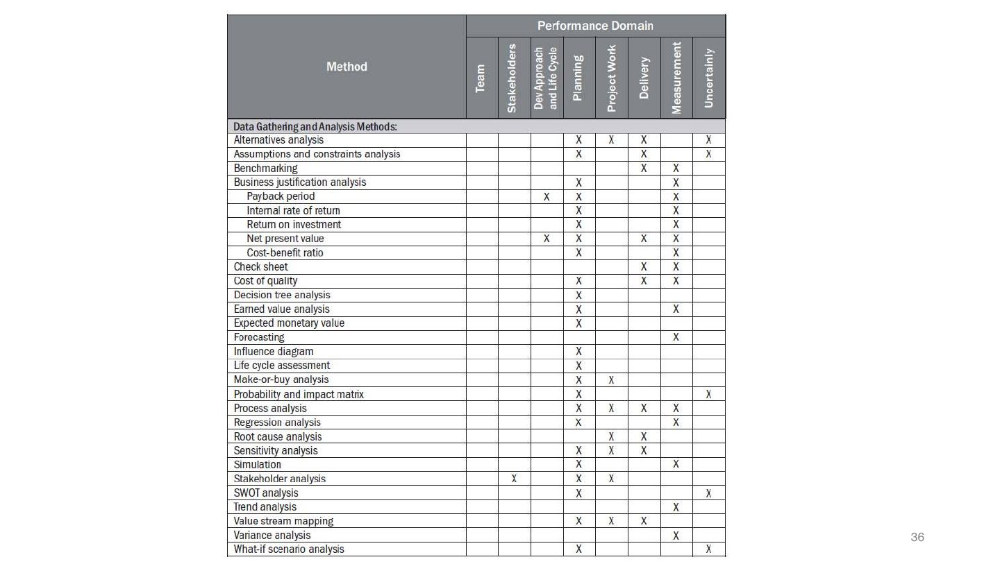
Notes
A reference table showing which performance domains each item is useful in (an X per domain). Don’t memorize it; use it to pick a suitable tool when a scenario asks which method or artifact would help. Data methods: e.g. make-or-buy analysis serves planning and project work; probability-and-impact matrices serve uncertainty.
Methods by performance domain (cont.)
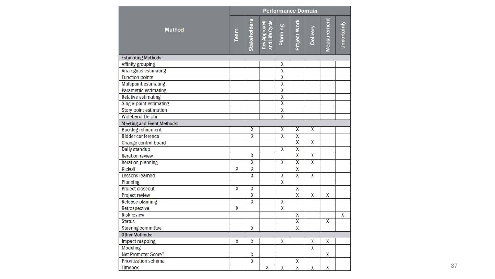
Notes
A reference table showing which performance domains each item is useful in (an X per domain). Don’t memorize it; use it to pick a suitable tool when a scenario asks which method or artifact would help. Estimating methods and meetings (e.g. retrospectives serve team and project work; risk reviews serve uncertainty).
Commonly Used Artifacts
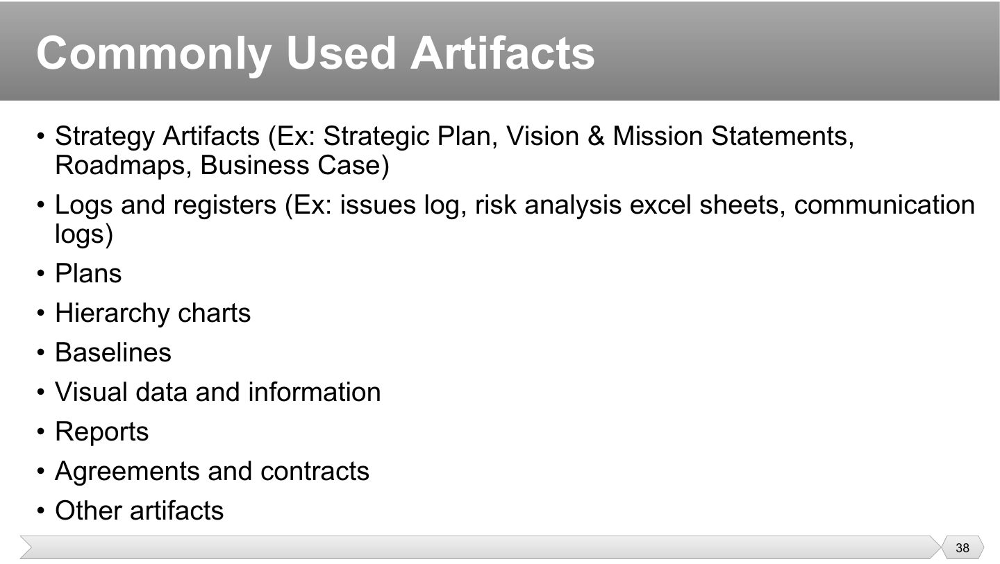
Notes
These answer “why are we doing this?” and they’re set before detailed work starts. A business case is the one you’re most likely to be asked about, since it justifies the project.
These are running records, updated as things happen. Ask “does this list keep growing during the project?”; if yes, it’s one of the logs and registers, like an issue log.
Tell them apart by purpose: plans say what we intend, baselines are the approved version we compare against, reports say what happened, and agreements and contracts bind people to it.
Tips & tricks
- Sentence, in slide order: Students Love Pizza, Hot Burgers, Vanilla Rolls And Oreos. Strategy, Logs and registers, Plans, Hierarchy charts, Baselines, Visual data, Reports, Agreements, Other.
Exam angle
A business case belongs to which category of artifacts?
Artifacts by performance domain
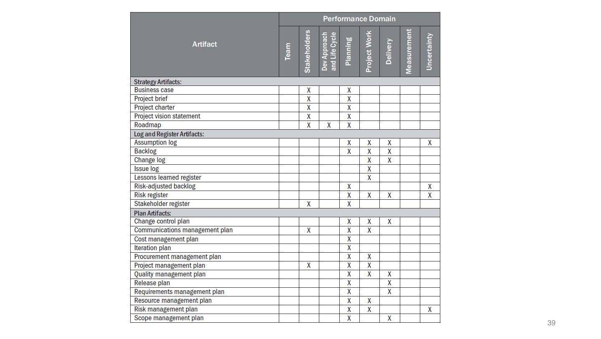
Notes
A reference table showing which performance domains each item is useful in (an X per domain). Don’t memorize it; use it to pick a suitable tool when a scenario asks which method or artifact would help. Artifacts: e.g. the business case and charter serve stakeholders and planning; the risk register serves planning, project work, delivery and uncertainty.
Artifacts by performance domain (cont.)
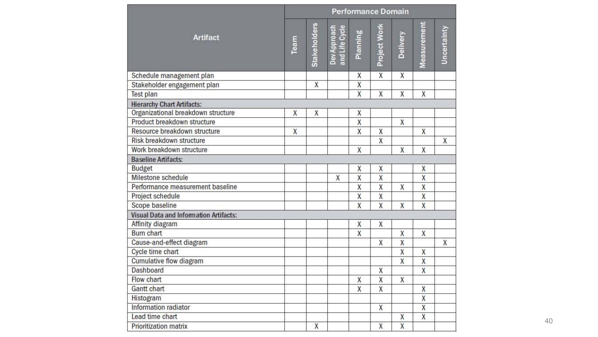
Notes
A reference table showing which performance domains each item is useful in (an X per domain). Don’t memorize it; use it to pick a suitable tool when a scenario asks which method or artifact would help. Hierarchy charts, baselines and visual data (e.g. burn charts serve measurement).
Artifacts by performance domain (cont.)
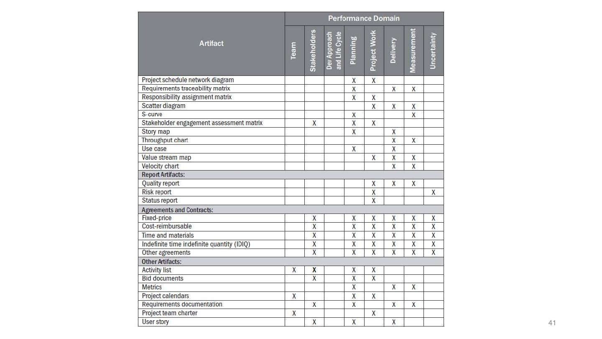
Notes
A reference table showing which performance domains each item is useful in (an X per domain). Don’t memorize it; use it to pick a suitable tool when a scenario asks which method or artifact would help. Reports, agreements and contracts.